Deep Past and First Games 62
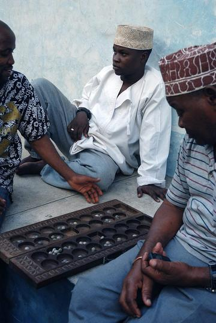
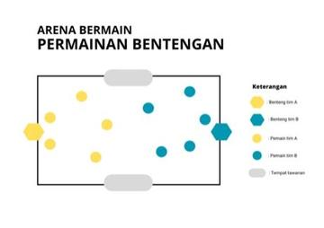


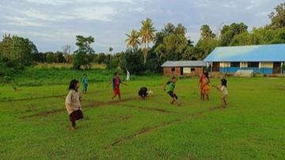
Gonu
South Korea · Board and table games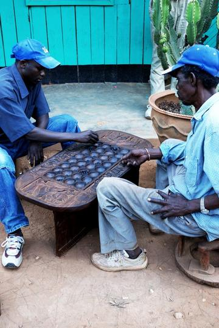
Igisoro
Rwanda +1 · Board and table games
Katro / Katra
Madagascar · Board and table games
Kisolo
DR Congo +1 · Board and table games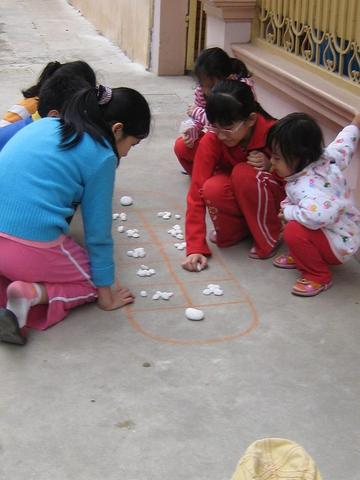


Owela
Namibia · Board and table games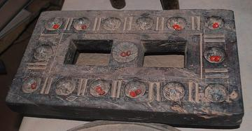
Pallanguzhi
India · Board and table games
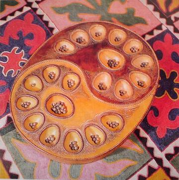
Adji-boto
Suriname · Board and table gamesAndada
Eritrea · Board and table gamesAnywoli
Sudan · Board and table gamesArabian mancala
Yemen · Board and table gamesAweet
Sudan · Board and table gamesDabuda
Ethiopia +1 · Board and table gamesKale
Gabon · Board and table gamesKiela
Angola · Board and table gamesKrur
Morocco · Board and table gamesLocal mancala variants
Equatorial Guinea · Board and table gamesMakonn
Seychelles · Board and table gamesMancala-type sowing games
Central African Republic · Board and table gamesMangola
DR Congo · Board and table gamesMoruba / Ncuva
South Africa · Board and table gamesNgola
Congo · Board and table gamesNsolo
Zambia +1 · Board and table gamesNtxuva
Mozambique · Board and table gamesOhvalhu
Maldives · Board and table gamesOlinda Keliya
Sri Lanka · Board and table gamesPoo
Liberia · Board and table gamesSija
Chad · Board and table gamesSyrian mancala
Syria · Board and table gamesTchouba
Mozambique · Board and table gamesTsoro
Zimbabwe · Board and table games
River Valleys and First Cities 45


Don't Get Angry
Germany · Board and table games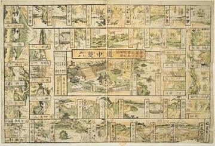
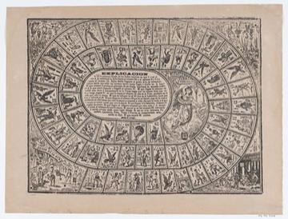
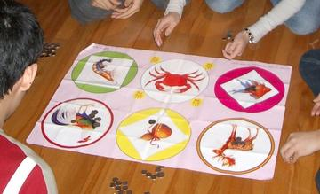
Gourd-crab dice
Vietnam · Board and table games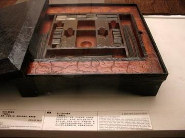
Liubo
China · Board and table games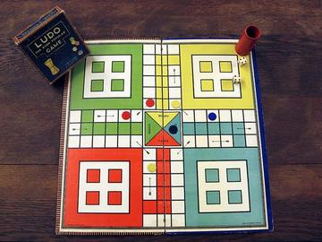
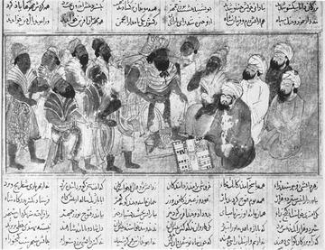
Nard / backgammon
Turkmenistan +1 · Board and table games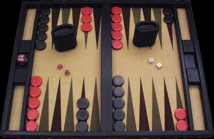
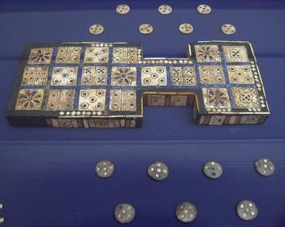
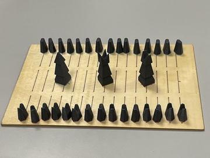
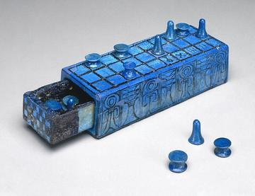
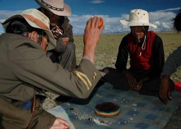
Sho
China · Board and table games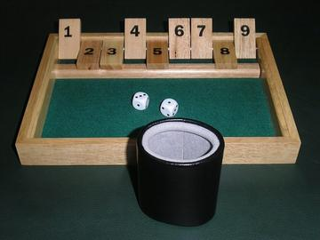

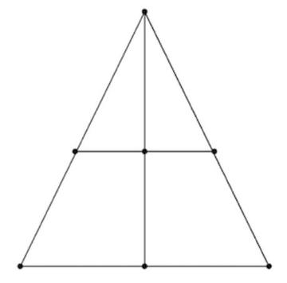
Nard / long backgammon
Uzbekistan · Board and table gamesNardy
Russia · Board and table gamesPancha
Sri Lanka · Board and table gamesPotta
Barbados · Board and table gamesShax
Djibouti +1 · Board and table gamesThin Hama
Maldives · Board and table gamesYam
Bhutan · Board and table games
Classical Worlds 8

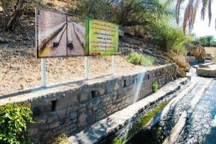
Falaj Water-Turn Clock
Oman · Board and table games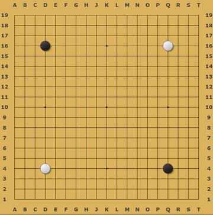


Tea Horse Road Caravan
China · Board and table gamesShashki / chess
Uzbekistan · Board and table games
Crossroads and Golden Ages 104

Acadja Fish Park
Benin · Board and table games
Balanta Mangrove Rice Polder
Guinea-Bissau · Board and table games
Banqi
China +1 · Board and table games
Bingo
Canada · Board and table games
Cafe dominoes
Egypt · Board and table games


Checkers
Bahamas +1 · Board and table games

Chickenfoot
United States · Board and table games


Floating market trader
Thailand · Board and table games


Italian draughts
Italy · Board and table games


Ladu
Djibouti +1 · Board and table games


Luzhanqi
China · Board and table games


Nzango
Congo · Board and table games


Queah
Liberia · Board and table games
Racing Pigeon Loft
Belgium +2 · Board and table games
Riichi mahjong
Japan · Board and table games
Rummikub
Israel · Board and table games

Shashki
Ukraine +2 · Board and table games


Sittuyin
Myanmar · Board and table games

Texas 42
United States · Board and table games

Yap stone money trade puzzle
Micronesia · Board and table games

101 Okey
Turkey · Board and table gamesAkedewama
Cote d'Ivoire · Board and table gamesBahamian dominoes
Bahamas · Board and table gamesChoko
Gambia · Board and table gamesCzech draughts
Czechia · Board and table gamesDhamet
Mauritania · Board and table gamesDuo
Cote d'Ivoire · Board and table gamesDutch draughts
Netherlands · Board and table gamesEdrees
Palestine · Board and table gamesFanoron-Telo
Madagascar · Board and table gamesFohr
Cote d'Ivoire · Board and table gamesGaple dominoes
Indonesia · Board and table gamesHaitian dominoes
Haiti · Board and table gamesHungarian dominoes
Hungary · Board and table gamesJamaican dominoes
Jamaica · Board and table gamesKhmer chess
Cambodia · Board and table gamesKikouri
Cote d'Ivoire · Board and table gamesLambs and Tigers
India · Board and table gamesMalay draughts
Malaysia · Board and table gamesMaldivian chess
Maldives · Board and table gamesOdede
Uganda · Board and table gamesPai gow
China · Board and table gamesPolish draughts
Poland · Board and table gamesPub dominoes
United Kingdom · Board and table gamesPuluc
Guatemala +1 · Board and table gamesSig
Mauritania · Board and table gamesSlam dominoes
Barbados · Board and table gamesTaiwanese mahjong
Taiwan · Board and table gamesTanzanian draughts
Tanzania · Board and table gamesThai checkers
Thailand · Board and table gamesTien gow
China · Board and table gamesUnion Jack Game
Antigua and Barbuda · Board and table games
Age of Contact and Craft 5
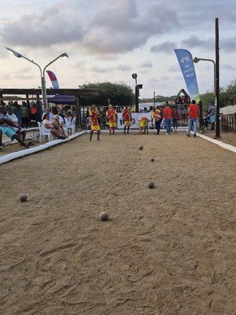
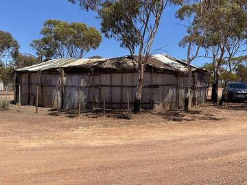
Two-up
Australia · Board and table gamesAchi
Ghana · Board and table gamesMaghrebi 5x5 capture game
Libya · Board and table games
Modern Heritage 2
Draughts
Barbados +5 · Board and table games